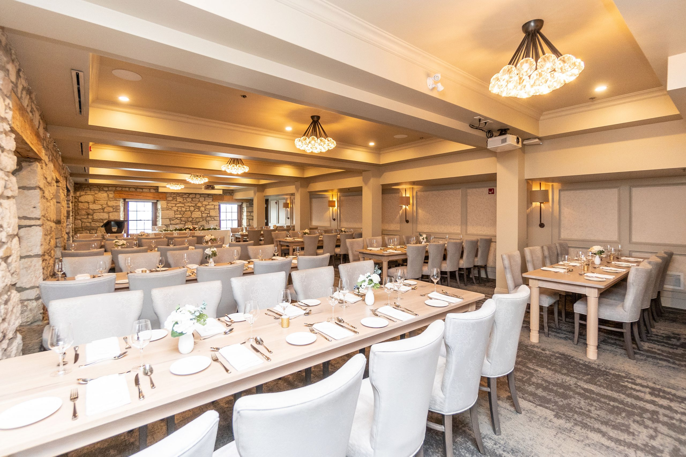
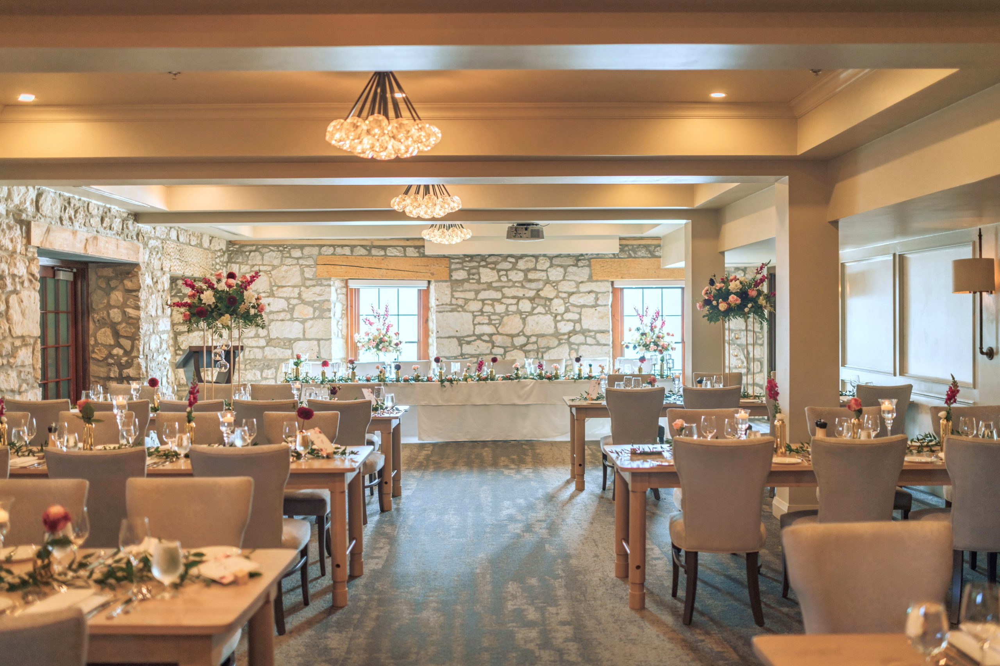

CELEBRATION PAGE IS WORK IN PROGRESS
Cambridge Mill is an upscale dining destination located on the picturesque banks of the Grand River in Cambridge, Ontario. Housed in a beautifully restored 19th-century mill, the restaurant offers a unique blend of historical charm and modern elegance. The menu features a range of dishes inspired by seasonal, locally sourced ingredients, with an emphasis on farm-to-table dining. Guests can enjoy a variety of gourmet options, including fresh seafood, prime cuts of meat, and creative vegetarian dishes, all thoughtfully prepared by the restaurant's skilled culinary team.
The ambiance at Cambridge Mill is warm and inviting, with rustic stone walls, large windows offering stunning river views, and cozy fireplaces that add to the restaurant’s charm. The service is attentive and professional, making it a popular choice for both casual dining and special occasions. The experience is both memorable and delightful.
Cambridge Mill is also a premier wedding venue, renowned for its breathtaking setting and impeccable service. The venue offers a variety of elegant event spaces.
Our reserved reception space is called the Waterfront Room and Garden Terrace. In this space heritage touches like the limestone walls, a wood burning fireplace and casement windows contribute to the allure while plush comfortable chairs and ambient lighting complete the setting. Enter the attached Garden Terrace with retractable glass walls for year round enjoyment.